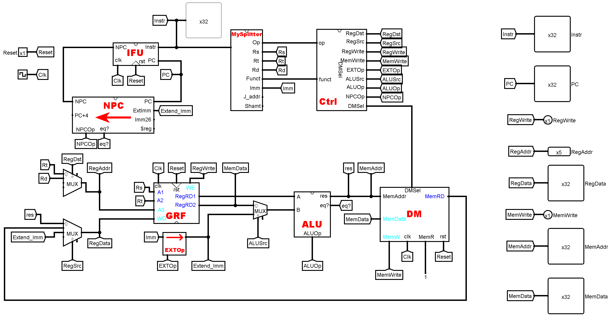
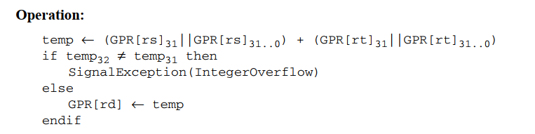
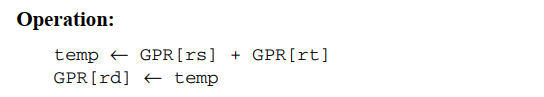

CPU设计文档¶
说明
2023年《计算机组成》（实验）P4 Verilog单周期CPU设计文档
author: 匡亦煊 22371092
目录：
- Part 0. 概述
- Part 1. RTL描述分析
- Part 2. 关键模块构造
- Part 3. 测试
- Part 4. 思考题
- Part 5. 注意事项
Part 0. 概述¶
-
P3：
- 处理器为 32 位单周期处理器，应支持的指令集为：
add, sub, ori, lw, sw, beq, lui, nop，其中： nop为空指令，机器码0x00000000，不进行任何有效行为（修改寄存器等）。add, sub按无符号加减法处理（不考虑溢出）。
- 处理器为 32 位单周期处理器，应支持的指令集为：
-
P4：
- 新增指令：
jal、jr - 任务基本上就是将P3的Logisim电路图映射到Verilog，顶层电路图（P3课下，不含P4新加）如下：
- 新增指令：

Part 1. RTL描述分析¶
我将指令大致分为3类，并归纳这些指令的RTL描述：
1.运算类
| 指令 | RTL描述的操作过程 |
|---|---|
add |
\rm R[rd] \leftarrow R[rs]+R[rt] |
sub |
\rm R[rd]\leftarrow R[rs]-R[rt] |
ori |
\rm R[rt]\leftarrow R[rs] \;OR\;zero\_extend(imm16) |
lui |
\rm R[rt]\leftarrow 加载到高位\_extend(imm16) |
2.访存类
| 指令 | RTL描述的操作过程 |
|---|---|
lw |
\rm Addr \leftarrow R[rs] + sign\_extend(imm16) \rm R[rt] \leftarrow M[Addr] |
sw |
\rm Addr \leftarrow R[rs] + sign\_extend(imm16) \rm M[Addr] \leftarrow R[rt] |
3.跳转类
| 指令 | RTL描述的操作过程 |
|---|---|
beq |
\rm PC\leftarrow (R[rs]==R[rt])? PC+4+sign\_extend(imm16\|0^2):PC+4 |
jal |
\rm PC \leftarrow PC_{31..28}\|imm26\|0^2 \rm R[31]\leftarrow PC+4 |
jr |
\rm PC\leftarrow R[rs] |
Part 2. 关键模块构造¶
1. IFU¶
端口定义¶
| 信号名称 | 方向 | 描述 |
|---|---|---|
| NPC[31:0] | I | 下一个PC值 |
| rst | I | 异步复位信号 |
| clk | I | 时钟信号 |
| PC[31:0] | O | 当前PC值 |
| Instr[31:0] | O | 当前PC指向的32位指令 |
功能定义¶
| 序号 | 功能 | 描述 |
|---|---|---|
| 1 | 复位 | 当异步复位有效时，将当前PC值复位为0x00003000 |
| 2 | 取指 | 当时钟上升沿到来时，更新PC值，并取出PC值指向的指令 |
2. NPC¶
端口定义¶
| 信号名称 | 方向 | 描述 |
|---|---|---|
| PC[31:0] | I | 当前PC值 |
| NPCOp[1:0] | I | 控制PC更新的方式，具体见功能定义 00：顺序更新 01：beq更新 10：…… 11：…… |
| Extend_Imm[31:0] | I | EXT模块输出端的立即数 |
| Imm26[25:0] | I | j型跳转指令的地址，来自指令的25:0位 |
| $reg[31:0] | I | GRF模块读出的某个寄存器的值 |
| eq? | I | ALU模块输出端的R[rs]==R[rt]判断结果0：不相等 1：相等 |
| NPC[31:0] | O | 下一个PC值 |
| PC+4[31:0] | O | 当前PC值+4 |
功能定义¶
| 序号 | 功能 | 描述 |
|---|---|---|
| 1 | 顺序更新 | PC ← PC + 4 |
| 2 | beq更新 | PC ← (R[rs] == R[rt]) ? PC + 4 +sign_extend(imm<<2) |
| 3 | …… | …… |
| 4 | …… | …… |
3. GRF¶
端口定义¶
| 信号名称 | 方向 | 描述 |
|---|---|---|
| A1[4:0] | I | 5位读寄存器地址（编号） |
| A2[4:0] | I | 5位读寄存器地址（编号） |
| A3[4:0] | I | 5位写寄存器地址（编号） |
| WD[31:0] | I | 32位写入数据 |
| WE | I | 写使能信号 |
| rst | I | 异步复位信号 |
| clk | I | 时钟信号 |
| RegRD1[31:0] | O | A1寄存器读出值 |
| RegRD2[31:0] | O | A2寄存器读出值 |
功能定义¶
| 序号 | 功能 | 描述 |
|---|---|---|
| 1 | 复位 | 当异步复位有效时，将所有寄存器的值复位为0 |
| 2 | 读数据 | 从RegRD1、RegRD2端口读出A1、A2寄存器的值 |
| 3 | 写数据 | 当 时钟上升沿到来，且使能信号WE有效时，将WD写入到A3寄存器 |
4. ALU¶
端口定义¶
| 信号名称 | 方向 | 描述 |
|---|---|---|
| A[31:0] | I | 参与运算的第一个数 |
| B[31:0] | I | 参与运算的第二个数 |
| ALUOp[1:0] | I | 控制运算的方法，具体见功能定义 00：算术加法 01：算术减法 10：逻辑或运算 11：…… |
| eq? | O | 输出 (A == B) ? 1 : 0 |
| res[31:0] | O | 运算结果 |
功能定义¶
| 序号 | 功能 | 描述 |
|---|---|---|
| 1 | 算术加法 | res = A + B |
| 2 | 算术减法 | res = A - B |
| 3 | 逻辑或运算 | res = A OR B |
| 4 | …… | …… |
5. EXT¶
端口定义¶
| 信号名称 | 方向 | 描述 |
|---|---|---|
| Imm[15:0] | I | 待扩展的16位立即数，来自I型指令的15:0位 |
| EXTOp[1:0] | I | 控制立即数的扩展方式，具体见功能定义： 00：无符号扩展 01：符合扩展 10：加载到高位 11：…… |
| Extend_Imm[31:0] | O | 扩展后的32位立即数 |
功能定义¶
| 序号 | 功能 | 描述 |
|---|---|---|
| 1 | 无符号扩展（zero extend） | 高位补0 |
| 2 | 符合扩展（sign extend） | 符合位为0，高位补0 符号位为1，高位补1 |
| 3 | 加载到高位（lui） | Imm加载到高16位，低16位补0 |
| 4 | …… | …… |
6. DM¶
端口定义¶
| 信号名称 | 方向 | 描述 |
|---|---|---|
| MemAddr[31:0] | I | 待写入数据/读出数据在内存中的地址 |
| MemData[31:0] | I | 待写入内存的数据 |
| MemWrite | I | 写使能信号 |
| rst | I | 异步复位信号 |
| clk | I | 时钟信号 |
| MemRD[31:0] | O | 读出的数据 |
功能定义¶
| 序号 | 功能 | 描述 |
|---|---|---|
| 1 | 异步复位 | 当异步复位信号有效时，将内存中的数据全部都复位为0 |
| 2 | 读数据 | 从MemRD端口读出内存中地址为MemAddr的数据 |
| 3 | 写数据 | 当 时钟上升沿到来，且使能信号MemWrite有效时，将MemData写入到内存中地址为MemAddr的位置 |
| 4 | …… | …… |
7. Ctrl¶
端口定义¶
| 信号名称 | 方向 | 描述 |
|---|---|---|
| op[5:0] | I | 所有指令的操作码，来自指令的31:26位 |
| funct[5:0] | I | R型指令的辅助识别码，来自R型指令的5:0为 |
| RegDst[1:0] | O | 控制哪个寄存器写入数据： 00：Rt 01：Rd 10：…… 11：…… |
| RegSrc[1:0] | O | 控制寄存器写入哪里的数据： 00：ALU的运算结果（如 add、sub、ori）01：DM的读出数据（如 lw）10：EXT扩展后的立即数（如 lui）11：…… |
| RegWrite | O | 控制GRF的写使能端何时有效： 0：GRF的写使能端无效 1：GRF的写使能端有效 |
| EXTOp[1:0] | O | 控制16位立即数采取何种方式扩展： 00：无符号扩展 01：符合扩展 10：加载到高位 11：…… |
| ALUSrc | O | 控制ALU的B端数据来自哪里： 0：GRF的RD2端读出数据 1：EXT扩展后的立即数 |
| ALUOp[1:0] | O | 控制ALU采取何种算术/逻辑运算： 00：算术加法 01：算术减法 10：逻辑或 11：…… |
| NPCOp[1:0] | O | 控制PC采取何种方式更新： 00：顺序更新 01：beq |
控制信号真值表¶
注：P4新加的
jr指令是R型指令
| R | add | sub | ori | lui | beq | lw | sw | jal | jr | ||
|---|---|---|---|---|---|---|---|---|---|---|---|
| op | 000000 | 001101 | 001111 | 000100 | 100011 | 101011 | 000011 | ||||
| funct | 100000 | 100010 | 001000 | ||||||||
| RegDst[1] | 0 | 0 | 0 | 0 | 0 | 1 | |||||
| RegDst[0] | 1 | 1 | 0 | 0 | 0 | 0 | |||||
| RegSrc[1] | 0 | 0 | 0 | 1 | 0 | 1 | |||||
| RegSrc[0] | 0 | 0 | 0 | 0 | 1 | 1 | |||||
| RegWrite | 1 | 1 | 1 | 1 | 1 | 1 | |||||
| MemWrite | 1 | ||||||||||
| EXTOp[1] | 0 | 1 | 0 | 0 | 0 | ||||||
| EXTOp[0] | 0 | 0 | 1 | 1 | 1 | ||||||
| ALUSrc | 0 | 0 | 1 | 0 | 1 | 1 | |||||
| ALUOp[1] | 0 | 0 | 1 | 0 | 0 | ||||||
| ALUOp[0] | 0 | 1 | 0 | 0 | 0 | ||||||
| NPCOp[1] | 0 | 1 | 1 | ||||||||
| NPCOp[0] | 1 | 0 | 1 | ||||||||
| DMSel |
8. MUX¶
到了Verilog，就不像Logisim那样有现成的MUX可用了。
因此需要自己写出 n 选1的 w bit MUX。
在顶层模块中用到了三个MUX：
- 控制GRF写入 目的地址 的
RegDstMUX（4选1，5bit） - 控制GRF写入 数据来源 的
RegSrcMUX（3选1，32bit） - 控制ALU的B端 数据来源 的
ALUSrcMUX（2选1，32bit）
为了便于扩展，控制信号都为8位；控制信号 n 和位宽 w 具体取多少取决于具体情况，后续扩展时记得要添加输入信号。
Part 3. 测试¶
测试工具¶
- disassembly（P3提交的工具）（from GitHub, modified by me）
- 数据生成程序（P3提交的工具）（by me）
- 支持打印过程变化量的修改版 Mars（from 讨论区, by 沈锎 22373080）
- ISE自带的ISim仿真
基本测试¶
运算类¶
跳转类¶
访存类¶
压力测试¶
Part 4. 思考题¶
思考题1
阅读下面给出的 DM 的输入示例中（示例 DM 容量为 4KB，即 32bit × 1024字），根据你的理解回答，这个 addr 信号又是从哪里来的？地址信号 addr 位数为什么是 [11:2] 而不是 [9:0] ？

解答：
- addr信号来自ALU模块的res（运算结果）
- addr（以及PC）是都是按字节寻址；而我们的
DM是通过reg [31:0] M [0:4095];（4096个32bit的寄存器阵列），显然其只能按字索引（寻址）；所以addr应该是4的整数倍，需要左移两位，以便按字寻址
思考题2
思考上述两种控制器设计的译码方式，给出代码示例，并尝试对比各方式的优劣。
解答：
指令对应的控制信号如何取值：
| Verilog | |
|---|---|
控制信号每种取值所对应的指令：
-
在Verilog实现时，采取第二中译码方式更好
-
第二种方式先用"与逻辑"识别指令，再用"或逻辑"生成控制信号，便于后续扩展；而且代码简洁直观。
-
第一种的话在不同的代码块中会重复的出现
ALUOp、RegDst等信号的赋值，显得臃肿冗杂，不易调试。
-
思考题3
在相应的部件中，复位信号的设计都是**同步复位**，这与 P3 中的设计要求不同。请对比**同步复位**与**异步复位**这两种方式的 reset 信号与 clk 信号优先级的关系。
解答：
- 异步复位：priority(
reset) > priority(clk)，不管clk是否处于上升沿，都会复位。 - 同步复位：priority(
reset) < priority(clk)，clk上升沿到来是reset信号有效的必要条件。
思考题4
C 语言是一种弱类型程序设计语言。C 语言中不对计算结果溢出进行处理，这意味着 C 语言要求程序员必须很清楚计算结果是否会导致溢出。因此，如果仅仅支持 C 语言，MIPS 指令的所有计算指令均可以忽略溢出。 请说明为什么在忽略溢出的前提下，addi 与 addiu 是等价的，add 与 addu 是等价的。提示：阅读《MIPS32® Architecture For Programmers Volume II: The MIPS32® Instruction Set》中相关指令的 Operation 部分（详见文档 page 34、page 35）。
解答：
- addi和add，在operation中加入了溢出检测
- 以add为例，若R[rs]和R[rt]的30都是1且31相同的话，就分别对应正数和负数的溢出情况，则这么计算后 \rm temp_{32} \neq temp_{31}，不相等，所以溢出。


- 检测溢出后就会抛出异常，但没有检测溢出的话，还是正常计算，所以和addiu，addu一样。
Part 5. 注意事项¶
在debug时，发现一些Veriolog的特性造成的让人抓狂的问题：
Danger
在对一个多位宽信号赋值时，如果只对某些bit赋值，可能产生意想不到的后果
-
我的控制基本信号基本都是8位，在对低0-1位赋值时，其他位竟然呈现高阻态！
-
错误写法：
这样写的话RegDst[7:2]都是z（高阻态）
- 正确写法：
| Verilog | |
|---|---|
Danger
注意Verilog运算符的优先级！
- 比如P1课上的T1，就因为没注意到
&和+的优先级，而找bug找了半小时！ - 再比如这次的P4：
- 错误写法：
NPC = (is_eq == 1) ? PC + 4 + extend_Imm << 2 : PC + 4 - 正确写法：
NPC = (is_eq == 1) ? PC + 4 + (extend_Imm << 2) : PC + 4
Danger
P3课上T3的教训
- 当顶层模块新增MUX时，其上下游的信号含义可能发生变化（使用Tunnel尤其不容易看出来），因此要注意其上下游数据通路的改变